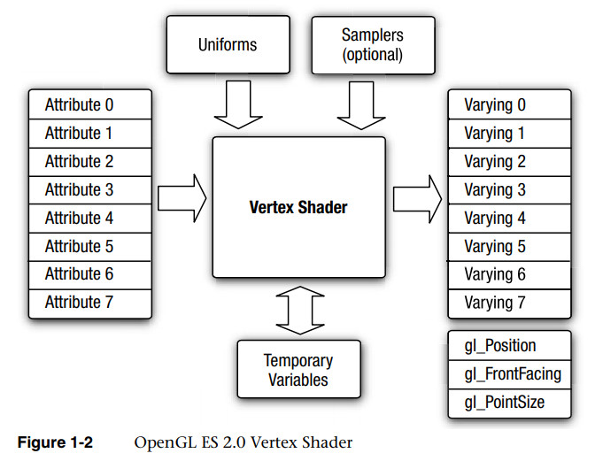
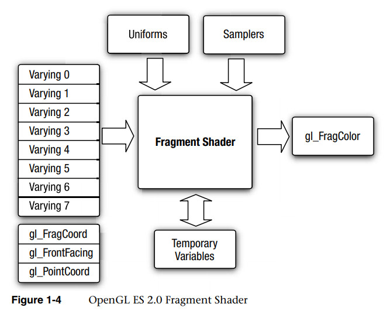
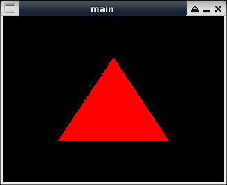

Steward
分享是一種喜悅、更是一種幸福
程式語言 - Simple DirectMedia Layer (SDL) - OpenGL ES 2.0 - C/C++ - Use Shader
參考資訊：
https://wiki.libsdl.org/FrontPage
https://kaprikawn.wordpress.com/2018/01/07/learning-to-learn-opengl-es-2-0-part-01/
http://www.subdude-site.com/WebPages_Local/RefInfo/Computer/Linux/LinuxGuidesOfOthers/linuxProgrammingGuides/pdfs/MobileDeviceProgramming/MOBogl_OpenGL_ES_2-0_ProgrammingGuide_2009_457pgs.pdf
OpenGL ES的Shader包含：Vertex、Fragment兩類，分別用來描述頂點和顏色，使用的程式語言則是Shader Language，Attribute是用來描述Vertex頂點的資料，而Uniform則是傳入給Shader的資料，由於是傳入的資料，因此是Read Only屬性，無法在Shader裡面做任意修改，另外還有一個叫Varying，它是用來在Vertex和Fragment之間傳遞使用
Vertex Shader會將Attribute資料轉換成對應的Varying資料，Varying資料就是要帶給Fragment Shader的資料，gl_Position是一個內建的Varying變數，需要將轉換後的資料傳入gl_Position

Fragment Shader會將Varying資料轉換成對應的顏色，gl_FragColor是一個內建的顏色變數，需要將轉換後的顏色傳入gl_FragColor

main.c
#include <stdio.h>
#include <stdlib.h>
#include <SDL2/SDL.h>
#include <GLES2/gl2.h>
const char *vShaderSrc =
"attribute vec4 vPosition; \n"
"void main(void) \n"
"{ \n"
" gl_Position = vPosition; \n"
"}";
const char *fShaderSrc =
"#ifdef GL_ES \n"
"precision mediump float; \n"
"#endif \n"
"uniform vec4 vColor; \n"
"void main(void) \n"
"{ \n"
" gl_FragColor = vColor; \n"
"}";
int main(int argc, char **argv)
{
SDL_Window *window = NULL;
SDL_GLContext context = {0};
SDL_Init(SDL_INIT_VIDEO);
SDL_GL_SetAttribute(SDL_GL_CONTEXT_PROFILE_MASK, SDL_GL_CONTEXT_PROFILE_ES);
SDL_GL_SetAttribute(SDL_GL_CONTEXT_MAJOR_VERSION, 2);
SDL_GL_SetAttribute(SDL_GL_CONTEXT_MINOR_VERSION, 0);
window = SDL_CreateWindow("main", 0, 0, 320, 240, SDL_WINDOW_OPENGL);
context = SDL_GL_CreateContext(window);
GLuint vShader = 0;
GLuint fShader = 0;
GLuint pObject = 0;
vShader = glCreateShader(GL_VERTEX_SHADER);
glShaderSource(vShader, 1, &vShaderSrc, NULL);
glCompileShader(vShader);
fShader = glCreateShader(GL_FRAGMENT_SHADER);
glShaderSource(fShader, 1, &fShaderSrc, NULL);
glCompileShader(fShader);
pObject = glCreateProgram();
glAttachShader(pObject, vShader);
glAttachShader(pObject, fShader);
glLinkProgram(pObject);
glUseProgram(pObject);
GLfloat v[] = {
0.0f, 0.5f, 0.0f,
-0.5f, -0.5f, 0.0f,
0.5f, -0.5f, 0.0f
};
GLuint vp = glGetAttribLocation(pObject, "vPosition");
glVertexAttribPointer(vp, 3, GL_FLOAT, GL_FALSE, 0, v);
glEnableVertexAttribArray(vp);
GLuint vc = glGetUniformLocation(pObject, "vColor");
glUniform4f(vc, 1.0f, 0.0f, 0.0f, 1.0f);
glViewport(0, 0, 320, 240);
glClear(GL_COLOR_BUFFER_BIT);
glDrawArrays(GL_TRIANGLES, 0, 3);
SDL_GL_SwapWindow(window);
SDL_Delay(3000);
SDL_DestroyWindow(window);
SDL_GL_DeleteContext(context);
SDL_Quit();
return 0;
}
vShaderSrc：宣告一個Attribute vPosition，vPosition會直接把Vertex頂點資料傳給gl_Position
fShaderSrc：宣告一個Uniform vColor，vColor會直接把顏色資料傳遞給gl_FragColor
LN59~61：取得vPosition位置並且設定三角形的頂點資料
LN63~64：取得vColor位置並且設定顏色為紅色
編譯、執行
$ gcc main.c -lSDL2 -lGLESv2 -o main $ ./main
